Requisitos previos
Navegador web:
Asegúrate de tener un navegador moderno (Chrome, firefox, safari, etc.) para una mejor experiencia.
Conexiòn a internet:
Necesitas acceso a internet para interactuar con el sistema.
Pasos guia para el uso e inicio de sesion en Claude con ejemplos para estudiantes
Abre el navegador de tu preferencia y escribe en la barra
de diecciones (en este caso de utilizaremos google) y copia y pegala siguiente url: https://claude.ai/login

Luego de poner el url presiona la tecla Enter y aparecera la siguiente pantalla
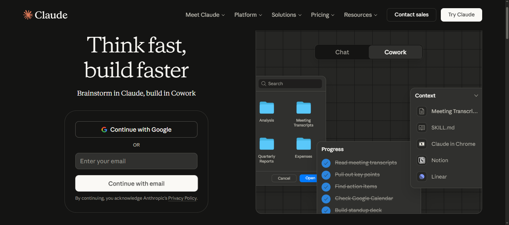
1.Iniciar sesion
En esta oportunidad iniciaremos sesion desde el principio.
Nos sale una pantalla muy interactiva del lado derecho, pero nos iremos directo a iniciar sesion
ya que estas pequeñas opciones siempre nos mandaràn a la pagina de inicio.
Iniciaremos con una cuenta nueva o si ya estamos registrados
olo inciamos sesion de forma habitual.
1.1Elegimos una cuenta para iniciar sesion
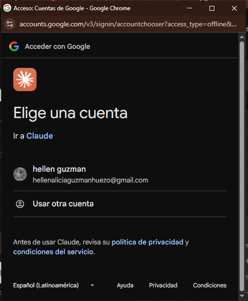
1.2.Le damos a continuar dando paso a Claude a nuestra informacion.
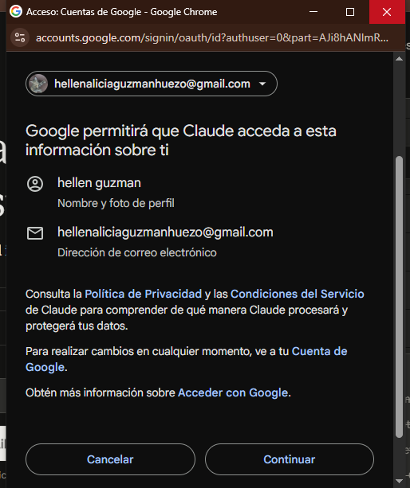
1.3.Aceptar todos los terminos y condiciones
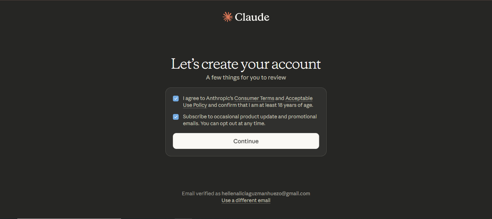
Siguiente al inicio de sesion
En este caso, nos mandarà directo a las opciones premium y gratis.
Para este ejemplo daremos click en "Free" que es una cuenta màs limitada.
1.4.Dar click a "Free".
Si deseamos obtener el premium de Claude gratis puedes ingresar al siguiente link:
Claude premium gratis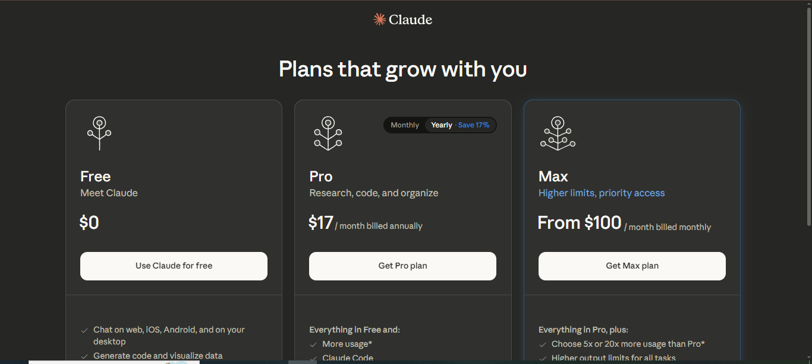
La IA de Claude nos da una pequeña introduccion de si misma, deslizaremos hacia abajo y continuar
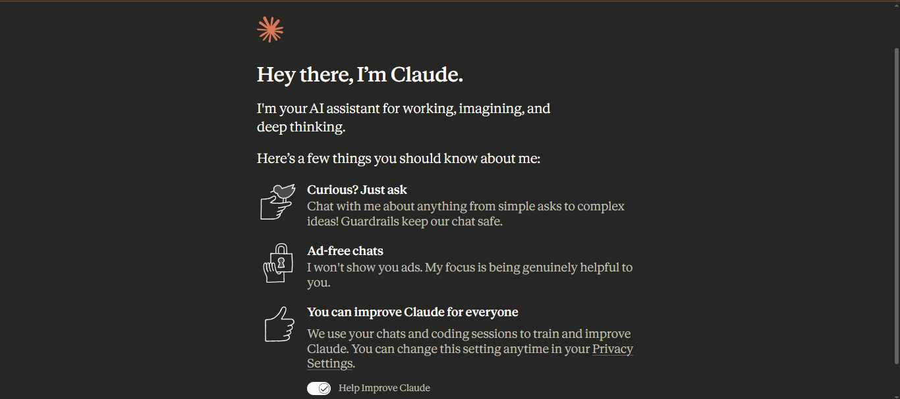
1.5.Decirle como queremos que nos llame.
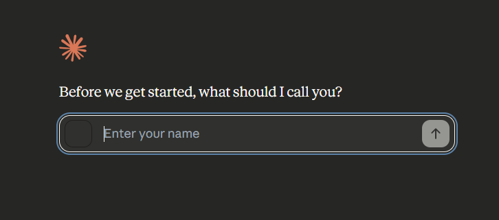
En mi caso colacarè "Hellen", pero ustedes pueden colocar su nombre.
1.6.Le decimos en què estamos interesados. Al haberlo Hecho, click en "let`s go"
En nuestro caso a aprender, desarrollar y codigificar.
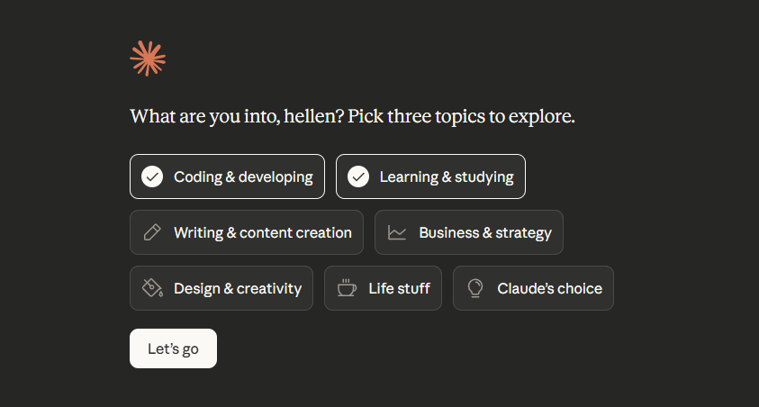
1.7.Dar click en primera opcion
Estas primeras opciones suelen ser predeterminadas solo para empezar el chat.
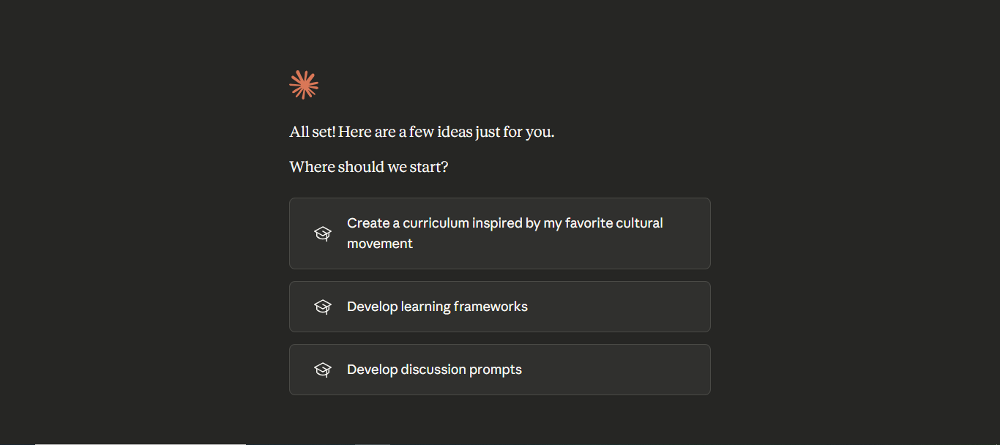
ADVERTENCIA
Siempre que veamos imagenes de este estilo:
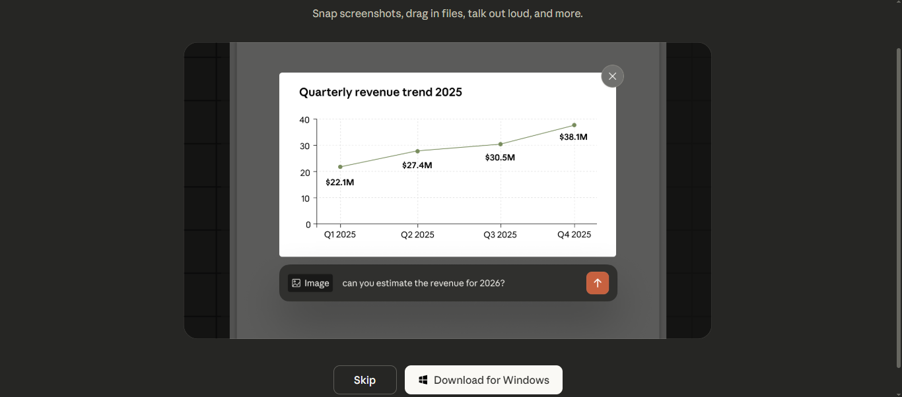
y tambien como esta mas adelante:
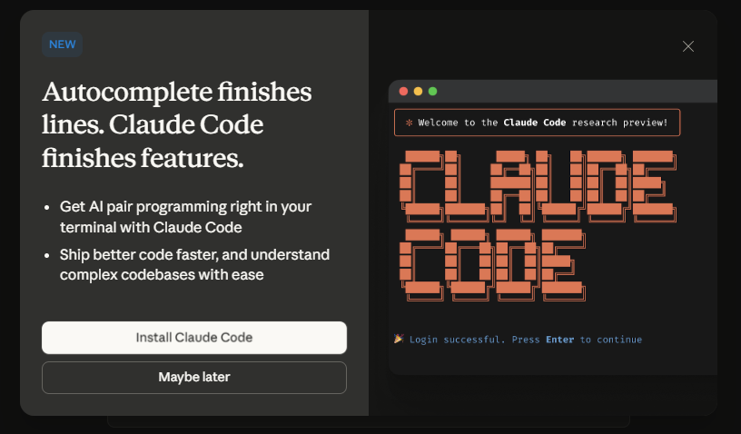
Hay que rechazarlas con botones "skip" o "maybe later"
2.Empezar a estudiar con la IA
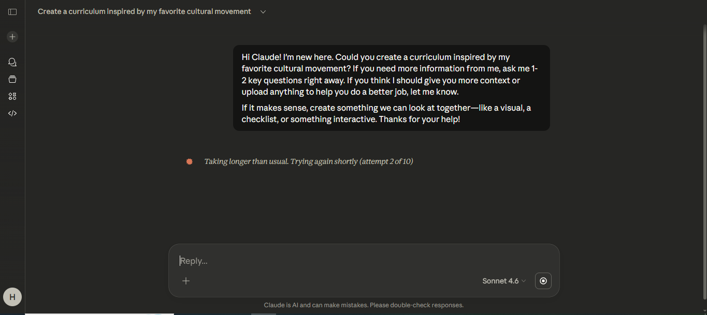
Ahora que ya podemos hablar con Claude utilizaremos un ejemplo dirigido a estudiantes de software principiantes. Ejemplo: Nos han dejado un trabajo de investigacion sobre Python
texto a poner: Estoy empezando en el mundo del software y me dejaron una tarea de investigacion sobre python, dame la informacion mas relevante y links del mismo, al igual que ejercicios para empezar a aprender.
3.Empezar a charlar
Claude nos da un chat ya creado a base de lo que pedimos al principio
y nos pone el mensaje para que lo enviemos al chat, pero no es de interes.
3.1.borramos haciendo click izquierdo presionado sobre el texto hasta que el texto este en azul completamente
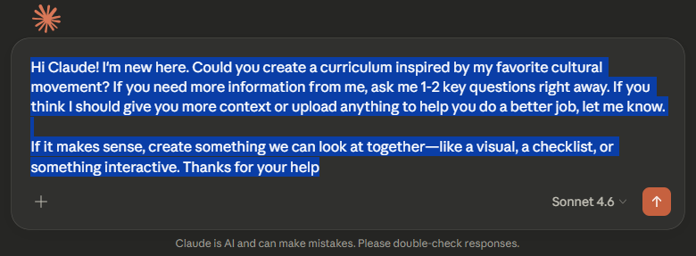
3.2.Ponemos en la barra de abajo lo que deseamos del ejemplo.
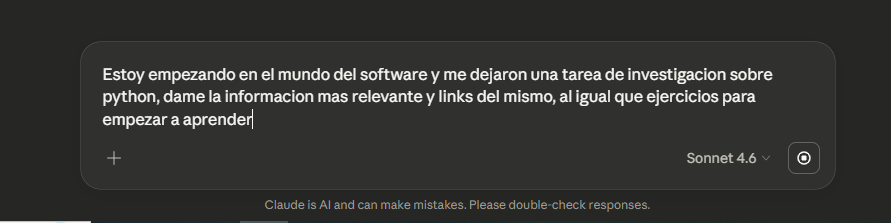
3.3.Le damos a aceptar y nos aparecera la informacion correspondiente.
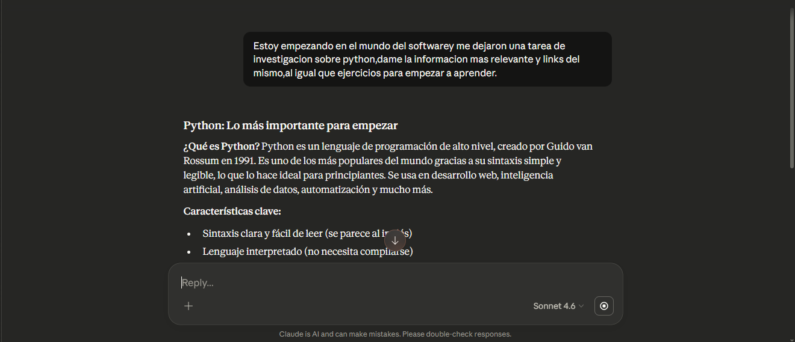
Esta IA es un poco mas complicada de utilizar que las anteriores
pero si eres estudiante de alguna ingeniera/bachillerato enfocada a software te puede ayudar bastante.